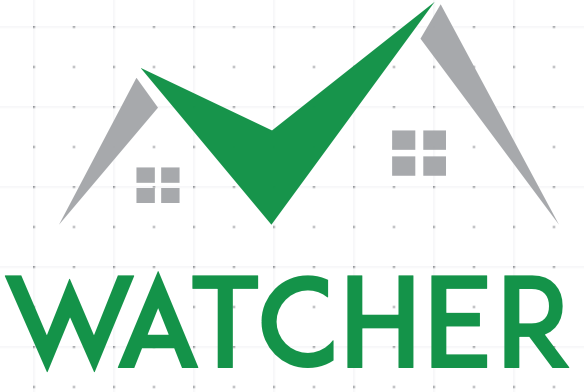

<!-- /**
 * Chatter - Chat themes Ionic 4 (https://www.enappd.com)
 *
 * Copyright © 2018-present Enappd. All rights reserved.
 *
 * This source code is licensed as per the terms found in the
 * LICENSE.md file in the root directory of this source .
 */ -->

<ion-header>
  <ion-toolbar>
    <ion-buttons slot="start">
      <ion-back-button defaultHref="home"></ion-back-button>
    </ion-buttons>
    <ion-title>
      <div class="title-block">
        <ion-icon name="chatboxes" color="d3blue" class="title-icon"></ion-icon>
        <ion-text color="d3blue" class="title-text">Real time watcher</ion-text>
      </div>
    </ion-title>
  </ion-toolbar>
</ion-header>

<ion-content class="ion-padding-vertical" fullscreen>
  <div id="chat-parent" class="bg-image" [ngClass]="{ 'bg-image-X': phone_model=='iPhone X'}">
    <div id="chat-container">
      <ion-row *ngFor="let conv of conversation; let i = index;" class="full no-padding">
        <ion-col class="no-padding chat-row" [ngClass]="{ 'reverse': conv.sender}" (click)="readMe(conv.text)">
          <div class="avatar-parent">
            <div class="avatar-border"></div>
            
          </div>
          <div [ngClass]="{ 'name-row-parent-right': conv.sender,'name-row-parent-left': !conv.sender}">
            <div class="no-padding" [ngClass]="{ 'name-row-right': conv.sender,'name-row-left': !conv.sender}">
              The watcher
              <div [ngClass]="{ 'timer-right': conv.sender,'timer-left': !conv.sender}">{{conv.time| date: "HH:mm:ss"}}
                <ion-icon *ngIf="conv.sender && conv.sent" name="checkmark" [color]="conv.read ? 'd3green': 'light'"
                  class="first-tick"></ion-icon>
                <ion-icon *ngIf="conv.sender && conv.delivered" name="checkmark"
                  [color]="conv.read ? 'd3green': 'light'" class="second-tick"></ion-icon>
              </div>
              <div [ngClass]="{ 'reverse-arc-right': conv.sender,'reverse-arc-left': !conv.sender}">
                <div [ngClass]="{ 'reverse-arc-color-right': conv.sender,'reverse-arc-color-left': !conv.sender}"></div>
              </div>
            </div>
            <div class="no-padding" [ngClass]="{ 'message-row-right': conv.sender,'message-row-left': !conv.sender}">
              <ion-text class="ion-no-margin" class="text">{{conv.text}}</ion-text>
            </div>
          </div>
        </ion-col>
      </ion-row>
    </div>
  </div>
</ion-content>